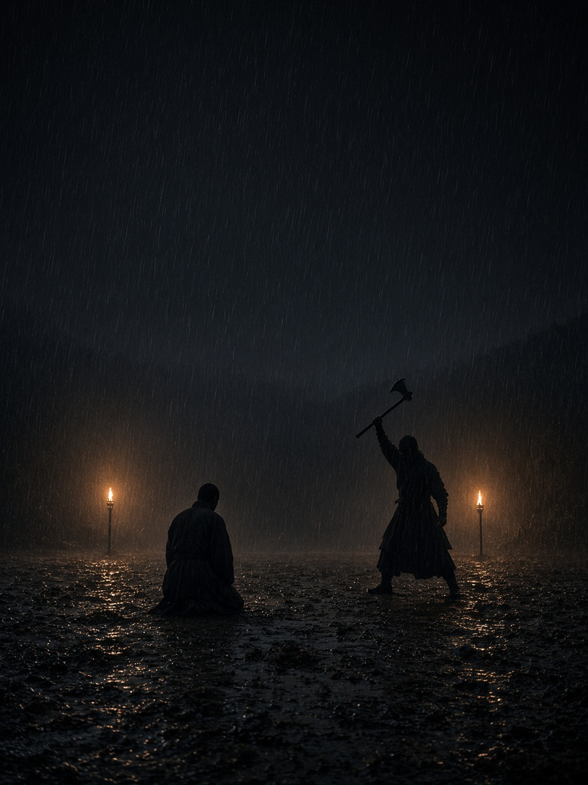
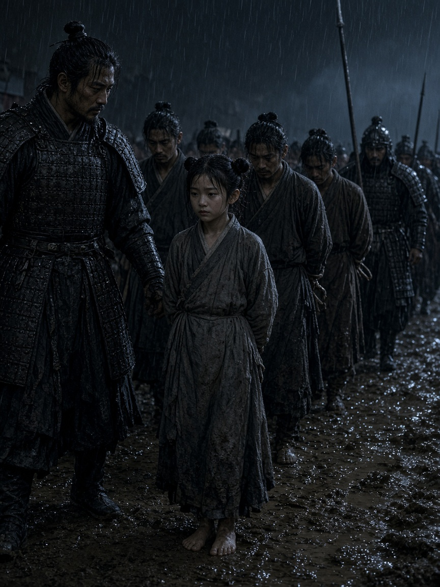
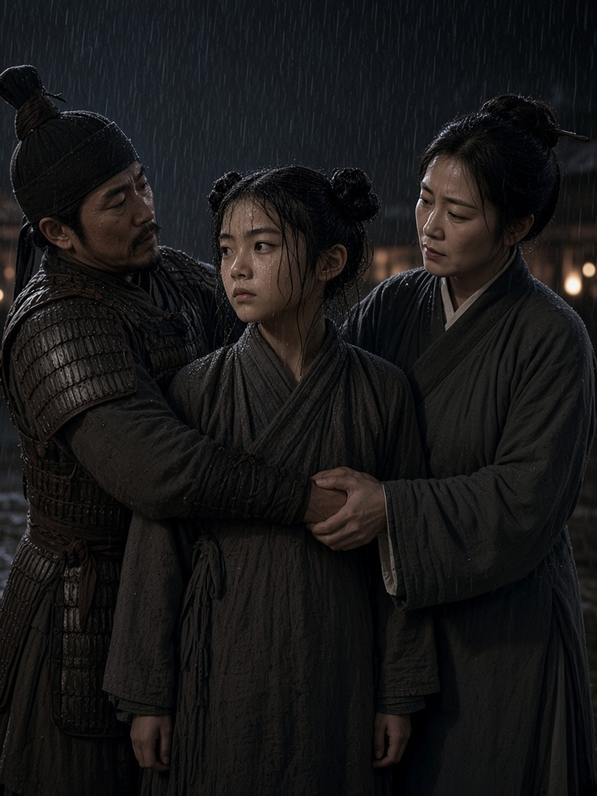
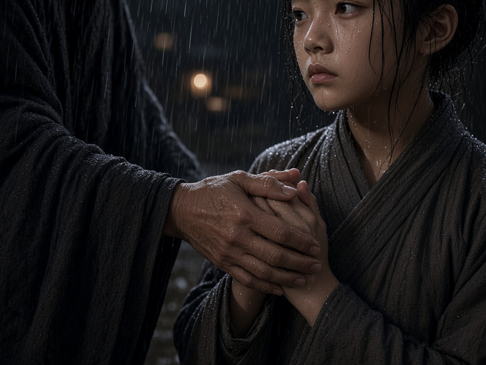

SCENE 1
죄인의 딸,
궁궐에 들어서다

쏴아아아
지직…
형리 죄인 풍랑. 마지막으로 남길 말이 있느냐.
풍랑 …내 딸만은, 살려 주시오.
형리 집행하라.
스윽

철벅
철벅
병사 움직여! 죄인의 일족이다. 멈추지 마라!

울지 않아.
울면… 저들이 이기는 거야.

고모 비켜라! 이 아이는 내가 데려간다!
병사 마, 마마… 하오나 이 아이는 죄인의…
고모 감히 내 앞에서 그 말을 입에 올리느냐.

고모 가자. 살아야 한다. 무슨 일이 있어도.
끼이이이이…
두근…
오늘도 그 밤의 빗소리가 들린다.
아버지… 저는 아직 살아 있습니다.
풍태후
다시는… 아무에게도
무릎 꿇지 않겠다.
살아남기 위해,
그녀는 가장 높은 곳을 택했다.
쿵.
그녀가 성품이 영민했고 궁에 들어왔을 때
글과 계산을 대강 배운 정도였으나
지혜와 인내심이 많았다고 전한다.